7210E34 R.R. ROOF/SIDE PANEL - MOULDING CONNECTOR PROFILE
- Path
- Procedures > 72 PANELS AND FRAME > 7210 REMOVING REFITTING > 7210E EXTERNAL PARTS > 7210E34 R.R. ROOF/SIDE PANEL - MOULDING CONNECTOR PROFILE
- Kind
- repair procedure (removal / refitting; the operation number is the code)
- Applies to
- all engines; all production periods
- Interactive page
- https://sloeber94.github.io/elrnDB-fMltpl/en/#/2892322
Applies to: all engines; all production periods
 Removing
Removing
 Refitting
RefittingCheck if any of the connected parts are deformed by checking body alignment dimensions. Use appropriate measurement tools (reference rigs, templates or gauges).
Straighten the body if necessary.
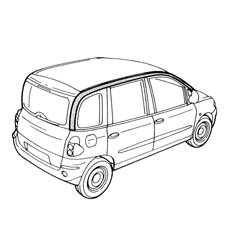
Applies to: all engines; all production periods
Use a rotary brush to remove paint to expose the spot welds.
1. Drill out the spot welds shown in the figure.
2. Use a chamfering machine to crop the spot welds shown in the figure.
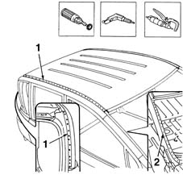
Applies to: all engines; all production periods
1. Use a chamfering machine to crop the spot welds shown in the figure.
2. Drill out the spot welds shown in the figure.
3. Use an oxyacetylene torch and wire brush to remove the brazing in the areas shown in the figure.
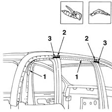
Applies to: all engines; all production periods
1. Use a chamfering machine to crop the spot welds shown in the figure.
2. Use an oxyacetylene torch and wire brush to remove the brazing in the areas shown in the figure.
Using a chisel and hammer, remove the top door frame trim from the car.
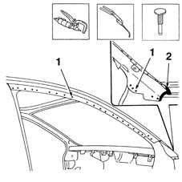
Applies to: all engines; all production periods
1. Drill equidistant holes in the roof.
Using a hammer and profiled stake, straighten the panel edges.
Use a grinding wheel to remove the weld residues.
2. Apply the electroweldable paint finish to the areas shown in the figure.
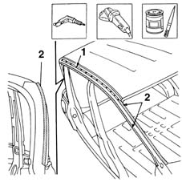
Applies to: all engines; all production periods
Refitting
RemovingUse a grinding wheel to remove the corrosion-proofing from the part.
1. Make some holes in the part as shown in the figure.
Apply electroweldable paint to the part.
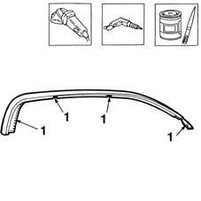
Applies to: all engines; all production periods
1. Fit the part correctly on the car and secure using self-locking grippers.
2. Use a spot welder and make a few spot welds to secure the part to the car.
Remove the self-locking grippers.
3. Close the front door (3a) and rear door (3b).
Check the alignment and ensure the surrounding gaps are even.
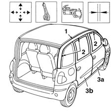
Applies to: all engines; all production periods
Fit the part correctly on the car and secure using self-locking grippers.
1. Use a MIG welder and fill weld the points shown in the figure.
2. Use a spot welder and weld the areas shown in the figure.
3. Use an oxyacetylene torch and hot solder the areas shown in the figure.
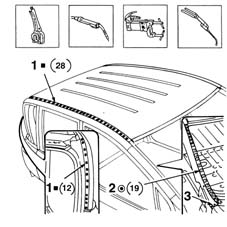
Applies to: all engines; all production periods
1. Use a MIG welder and fill weld the points shown in the figure.
2. Use a spot welder and weld the areas shown in the figure.
3. Use an oxyacetylene torch and hot solder the areas shown in the figure.
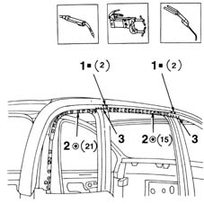
Applies to: all engines; all production periods
1. Use a MIG welder and fill weld the points shown in the figure.
2. Use a spot welder and weld the areas shown in the figure.
3. Use an oxyacetylene torch and hot solder the areas shown in the figure.
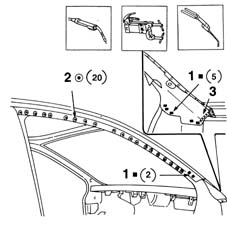
Applies to: all engines; all production periods
1. Use a rotary brush to remove the spot weld residues.
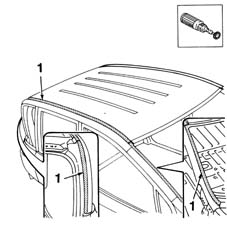
Applies to: all engines; all production periods
Apply rust-proofing to the newly welded areas.
1. Apply sealant to the join lines between part and car.
Apply paint (in accordance with the specified procedure).
2. Apply wax oil protection in the holes indicated.
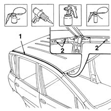
Applies to: all engines; all production periods
Refit all fouling parts.